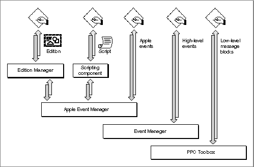

Legacy Document
Important: The information in this document is obsolete and should not be used for new development.
Important: The information in this document is obsolete and should not be used for new development.


Overview of Interapplication Communication
The interapplication communication (IAC) architecture provides a standard and extensible mechanism for communication among Macintosh applications. The IAC architecture makes it possible for your application to
The chapter "Event Manager" in Inside Macintosh: Macintosh Toolbox Essentials describes how your application can use Event Manager routines to send and respond to high-level events. High-level events need not adhere to any specific protocol, so their interpretation is defined by each application that sends or receives them.
- provide automated copy and paste operations between your application and other applications
- be manipulated by means of scripts
- send and respond to Apple events
- send and respond to high-level events other than Apple events
- read and write blocks of data between applications
The most important requirement for high-level communication among all applications is a common vocabulary of events. To provide such a standard, Apple Computer, Inc., has defined a protocol called the Apple Event Interprocess Messaging Protocol (AEIMP). High-level events that conform to this protocol are called Apple events.
The vocabulary of publicly available Apple events is published in the Apple Event Registry: Standard Suites, which defines the standard Apple events that developers and Apple have worked out for use by all applications. To ensure that your application can communicate at a high level with other applications that support Apple events now and in the future, you should support the standard Apple events that are appropriate for your application.
Effective IAC requires close cooperation among applications at several levels. In addition to the format for high-level events and the standard vocabulary of Apple events, Apple has defined several other standards your application can use to communicate with other applications. These include standard methods for dealing with shared dynamic data, scripts, and low-level message blocks.
The IAC architecture comprises the following parts:
Figure 1-1 shows the primary relationships among these parts. The managers and components toward the top of the figure rely on the managers beneath them. The Edition Manager uses the services of the Apple Event Manager to support dynamic data sharing. Scripting components manipulate and execute scripts with the aid of the Apple Event Manager. The Apple Event Manager in turn relies on the Event Manager to send Apple events as high-level events, and the Event Manager uses the services of the PPC Toolbox.
- The Edition Manager allows applications to automate copy and paste operations between applications, so that data can be shared dynamically.
- The Open Scripting Architecture (OSA) provides a standard mechanism, based on the Apple Event Manager, that allows users to control multiple applications by means of scripts written in a variety of scripting languages.
- The Apple Event Manager allows applications to send and respond to Apple events.
- The Event Manager allows applications to send and respond to high-level events other than Apple events.
- The Program-to-Program Communications (PPC) Toolbox allows applications to exchange blocks of data with each other by reading and writing low-level message blocks. It also provides a standard user interface that allows a user working in one application to select another application with which to exchange data.
Figure 1-1 also shows the five principal means of communication provided by the IAC architecture. In addition to using the Edition Manager and scripting components to send Apple events on their behalf, applications can use the Apple Event Manager directly to send Apple events to other applications. All applications can use the Apple Event Manager to respond appropriately to Apple events, whether they are sent by the Edition Manager, a scripting component, or other applications. Applications can also use the Event Manager directly to send or receive high-level events other than Apple events, and the PPC Toolbox directly to send or receive blocks of data.
Figure 1-1 Principal methods of communication between applications

The five forms of IAC shown in Figure 1-1 can be summarized as follows:
All forms of IAC are based on the premise that applications cooperate with each other. Both the application sending a high-level event or low-level message block and the application receiving it must agree on the protocol for communication. You can ensure effective high-level communication between your application and other Macintosh applications by supporting the standard Apple events defined in the Apple Event Registry: Standard Suites.
- Sharing dynamic data. The Edition Manager allows users to copy data from one application's document to another application's document, updating information automatically when the data in the original document changes. The verbs publish and subscribe describe this form of dynamic data sharing, and the noun edition describes a copy of the data to be shared. Applications that support dynamic data sharing must implement the Create Publisher and Subscribe To menu commands. The Edition Manager provides the interface that allows applications to share editions.
You can let users publish and subscribe on a local volume or across a network. In general, users should be able to publish or subscribe to anything that they can copy or paste. "Sharing Data Among Applications," which begins on page 1-6, describes how you can use the publish and subscribe features in your application.
- Scripting. The OSA includes the Apple Event Manager, the Apple events defined by the Apple Event Registry: Standard Suites, and the routines supported by scripting components, which applications can use via the Component Manager to execute scripts. Script-editing applications such as Script Editor (not shown in Figure 1-1) allow users to manipulate and execute scripts.
Each scripting language has a corresponding scripting component that can execute scripts written in that language. Scripting components typically implement a text-based scripting language based on Apple events. For example, the AppleScript component implements AppleScript, the standard user scripting language defined by Apple Computer, Inc. When the AppleScript component executes a script, it performs the actions described in the script, including sending Apple events to applications when necessary.
"Supporting AppleScript and Other Scripting Languages," which begins on page 1-13, describes how the OSA makes it possible for your application to
- provide human-language equivalents to Apple event codes so that scripting components can send your application the appropriate Apple events during script execution
- allow users to record their actions in the form of a script
- manipulate and execute scripts
- Sending and responding to Apple events. Your application can send Apple events directly to other applications to request services or information or to provide information. To support AppleScript and most other scripting languages based on the OSA, your application must be able to respond to Apple events. "Sending and Responding to Apple Events," which begins on page 1-9, describes how applications can send and respond to Apple events with the aid of the Apple Event Manager.
- Sending and responding to other high-level events. The Event Manager allows applications to support high-level events other than Apple events. See the chapter "Event Manager" in Inside Macintosh: Macintosh Toolbox Essentials for information about high-level events.
- Exchanging message blocks. The PPC Toolbox allows applications to exchange blocks of data with each other by reading and writing low-level message blocks. This method of communication is most useful for applications that are closely integrated, specifically designed to work together, or dependent on each other for information. It can also be used in code that is not event-based. See "Exchanging Message Blocks" on page 1-22 for a summary of the capabilities provided by the PPC Toolbox.